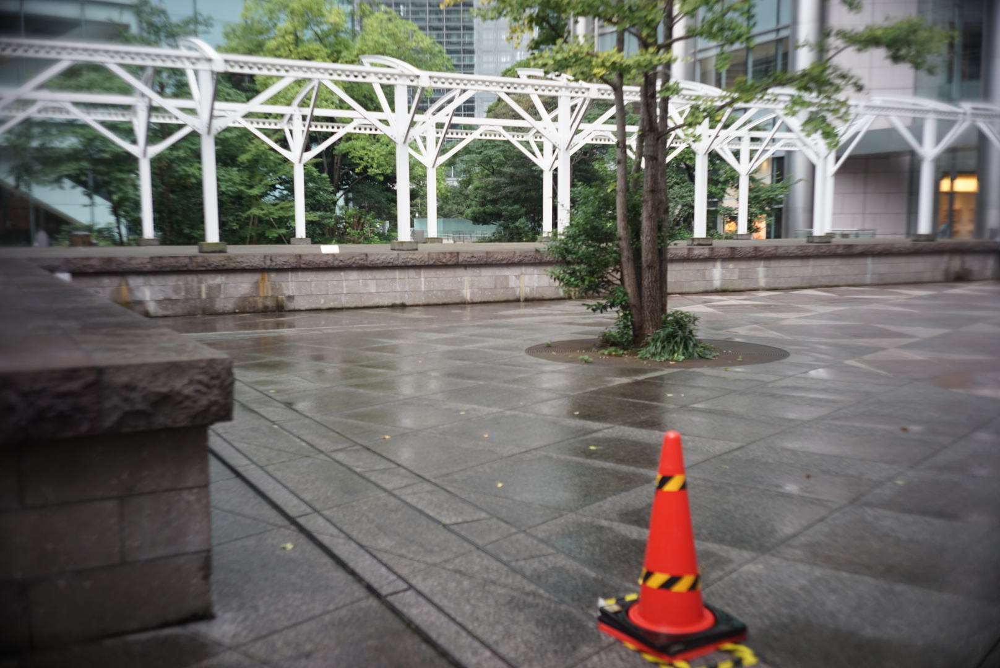

Tokyo suburb walker writing tanka and dark novels.
An ordinary salaryman who loves poems, horror, and SF — creating at night.
글 · syllable · poem-card · long-card · spec-card
사진 · filmscan · watermark · x-optimize · film-frame · heic-to-jpg · color-palette